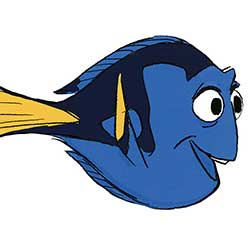
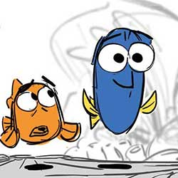
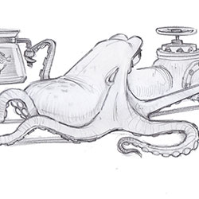
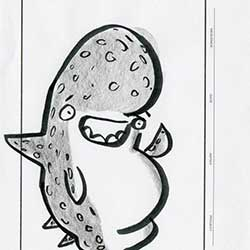
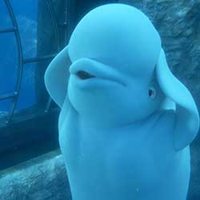
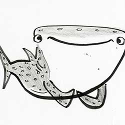
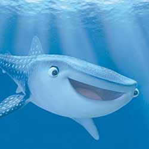
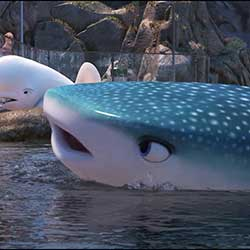
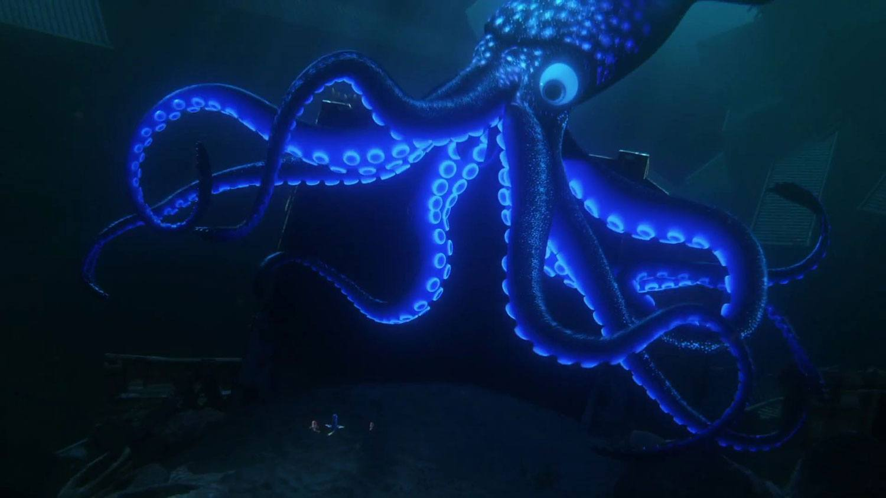

Forgetful blue tang Dory is living happily in the reef with Marlin and Nemo. When Dory suddenly remembers that she has a family out there who may be looking for her, the trio takes off on a life-changing adventure across the ocean to California’s prestigious Marine Life Institute, a rehabilitation center and aquarium. In an effort to find her mom and dad, Dory enlists the help of three of the MLI’s most intriguing residents: Hank, a cantankerous “septopus" who frequently gives employees the slip; Bailey, a beluga whale who is convinced his biological sonar skills are on the fritz; and Destiny, a nearsighted whale shark. Deftly navigating the complex inner workings of the MLI, Dory and her friends discover the magic within their flaws, friendships and family.
Dory is a bright blue tang with a sunny personality. She suffers from short-term memory loss, which normally doesn’t upset her upbeat attitude—until she realizes she’s forgotten something big: her family. She’s found a new family in Marlin and Nemo, but she’s haunted by the belief that someone out there is looking for her.




Dory is on a mission to the California coast to track down her family, and Marlin and Nemo are there to help her. Nemo may just be a young clownfish with a lucky fin, but he wholeheartedly believes in Dory. And Marlin, who of course knows how it feels to lose family, realizes he has no choice but to pack up his nervous energy and skepticism and embark on yet another adventure.


Hank is an octopus. Actually, he’s a “septopus”: he lost a tentacle—along with his sense of humor—somewhere along the way. An accomplished escape artist with camouflaging capabilities to boot, Hank is the first to greet Dory when she finds herself in the Marine Life Institute. Hank is after one thing—a ticket on a transport truck to a cozy Cleveland facility where he’ll be able to enjoy a peaceful life of solitude.



Bailey is the Marine Life Institute’s resident beluga whale who is convinced his biological sonar skills are on the fritz. The good news—or bad news, depending on who you ask—is that doctors at the MLI can’t seem to find anything wrong with him. Bailey’s flair for the dramatic never ceases to push his neighbor’s buttons: whale shark Destiny can’t seem to get through to him.




Destiny may be a clumsy swimmer, but she has a big heart. She has a big everything, actually—whale sharks are the biggest fish in the sea. Destiny resides in the Marine Life Institute, where one day an oddly familiar blue tang named Dory falls into her pool. Destiny is admittedly embarrassed by her obvious lack of grace, a product of poor eyesight, but Dory thinks she swims beautifully.




The Great Barrier Reef’s vibrantly colored coral and seaweed provide a fun and friendly home for Marlin, Nemo and the newest member of their family, Dory.
The “Jewel of Morro Bay”—the Marine Life Institute (MLI), is a rescue and rehabilitation center and premiere aquarium.

The Shipping Lanes are a stark and foreboding wasteland of shipwrecked vessels and shipping containers. Home to pesky hermit crabs and other creatures, the shipping lanes are filled with surprises.
DIRECTED BY ANDREW STANTON
CO-DIRECTED BY ANGUS MACLANE
PRODUCED BY LINDSEY COLLINS, P.G.A.
EXECUTIVE PRODUCER JOHN LASSETER
ASSOCIATE PRODUCER BOB ROATH
ORIGINAL STORY BY ANDREW STANTON
SCREENPLAY BY
ANDREW STANTON
VICTORIA STROUSE
MUSIC BY THOMAS NEWMAN
STORY SUPERVISOR MAX BRACE
FILM EDITOR AXEL GEDDES
SUPERVISING TECHNICAL DIRECTOR JOHN HALSTEAD
PRODUCTION DESIGNERS STEVE PILCHER
PRODUCTION MANAGER BECKY NEIMAN-COBB
SUPERVISING ANIMATOR
DAVID DEVAN
MICHAEL STOCKER
DIRECTOR OF PHOTOGRAPHY
CAMERA
JEREMY LASKY
LIGHTING
IAN MEGIBBEN
CHARACTER ART DIRECTOR JASON DEAMER
SETS DON SHANK
CHARACTER SUPERVISORS JEREMIE TALBOT
SETS SUPERVISOR COLIN HAYES THOMPSON
EFFECTS SUPERVISOR CHRIS J. CHAPMAN
GLOBAL TECHNOLOGY PATRICK COLEMAN
RENDERING SUPERVISOR HUMERA YASMIN KHAN
NEW TECHNOLOGY INTEGRATION SUPERVISOR DAVID RYU
CROWDS & ADDITIONAL ANIMATION SUPERVISOR PAUL MENDOZA
CROWDS TECHNICAL PAUL KANYUK
SOUND DESIGNER TIM NIELSEN
CASTING
KEVIN REHER, C.S.A.
NATALIE LYON, C.S.A.
DORY ELLEN DEGENERES
MARLIN ALBERT BROOKS
HANK ED O'NEILL
DESTINY KAITLIN OLSON
NEMO HAYDEN ROLENCE
BAILEY TY BURRELL
JENNY DIANE KEATON
CHARLIE EUGENE LEVY
YOUNG DORY SLOANE MURRAY